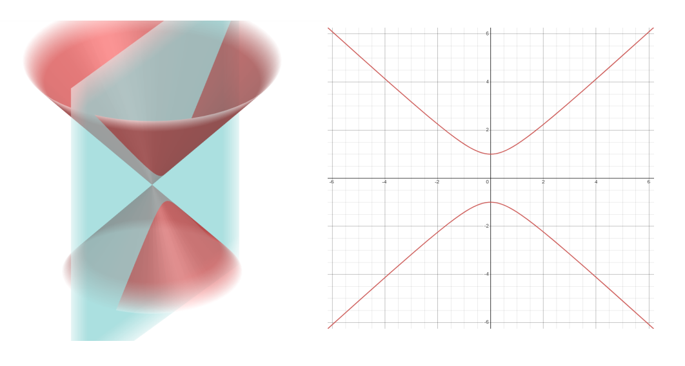

Agora iremos explorar extensivamente as Cônicas! Que são curvas matemáticas com propriedades muito interessantes, presentes em várias áreas da Matemática e Física.
As Cônicas servirão como ótimo ponto de partida para a sua jornada ao mundo das curvas geométricas!
Nessa aula introdutória, vamos analisar visualmente o que são as Cônicas e entender seu significado.
As Cônicas servirão como ótimo ponto de partida para a sua jornada ao mundo das curvas geométricas!
Nessa aula introdutória, vamos analisar visualmente o que são as Cônicas e entender seu significado.
O que é uma Cônica?
Uma Cônica pode ser definida como a curva gerada pela interseção de um plano a um cone. É por isso que elas são chamadas Cônicas (ou Seções Cônicas).
Já que estamos definindo as Cônicas pela sua interseção a um cone, vamos definir visualmente o que é um cone:
Já que estamos definindo as Cônicas pela sua interseção a um cone, vamos definir visualmente o que é um cone:
Animação interativa de um cone. O usuário poderá girar o cone, arrastar, tipo o geogebra.
Note que para nossa análise, um cone é infinito e espelhado no seu vértice. Essa superfície é gerada pela rotação de uma reta em torno de um eixo que a intersecta em apenas um ponto.
A explicação detalhada desse tipo de cone está na aula de Superfícies de Revolução, no módulo de Quádricas.
Mas, para essa aula, isso é tudo que precisamos saber.
Agora, vamos investigar o que acontece quando cortamos esse tipo de cone com um plano:
A explicação detalhada desse tipo de cone está na aula de Superfícies de Revolução, no módulo de Quádricas.
Mas, para essa aula, isso é tudo que precisamos saber.
Agora, vamos investigar o que acontece quando cortamos esse tipo de cone com um plano:
Animação que movimenta um plano ao longo de um cone várias vezes, gerando todos os casos possíveis de cônicas e pausando por um tempo neles. Do lado direito, fica a animação em 3D, do esquerdo, um gráfico com a cônica resultante dessa interseção. O usuário pode girar o cone como quiser.

Veja como criamos diferentes curvas ao cortar um cone. Essas são exatamente as curvas Cônicas!
Uma Cônica representa a interseção de um plano e um cone
Para quê servem as Cônicas?
Vamos ver alguns exemplos dos usos das Cônicas no mundo real:
-
Matemática e Geometria: Como veremos nas próximas aulas, as Cônicas são estudadas como exemplos de curvas definidas por equações de segundo grau.
-
Física: Podem ser utilizadas para descrever órbitas planetárias, aplicações em Ótica, Mecânica, entre outras.
-
Engenharia: Aplicadas no design de estruturas, antenas e processos aerodinâmicos. Além de servir como modelos regressores para aproximar funções experimentais.
-
Astronomia: Descrevem trajetórias de cometas, asteróides e satélites.
-
Computação: São usadas em algoritmos de geometria computacional e processamento gráfico.
-
Arquitetura e Arte: Podem ser empregadas em design de estruturas como abóbadas e cúpulas, além de elementos visuais em obras de arte.
-
Otimização: Podem ser utilizadas em modelos de otimização para resolver problemas de programação não linear.
Tipos possíveis de Cônicas
-
Parábola
-
Elipse
-
Hipérbole
-
Círculo (caso especial da Elipse)
-
Reta (cônica degenerada)
-
Retas duplas (cônica degenerada)
-
Ponto (cônica degenerada)
Esses são os tipos de Seções Cônicas. Vamos dissecar todos eles ao longo desse módulo!
Na próxima aula, começaremos os desenvolvimentos matemáticos da Parábola.
Na próxima aula, começaremos os desenvolvimentos matemáticos da Parábola.